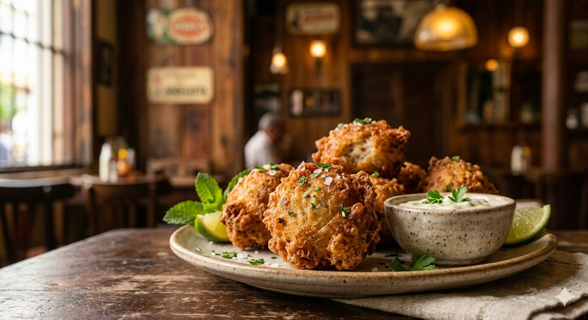

Sabor, ritmo y tradicion
Descubre nuestra carta llena de recetas tradicionales, cocteles tropicales y musica en vivo para convertir cualquier cena en una celebracion.
Bebidas tropicales que evocan el frescor del caribe
Carta de bebidas
Bocados crujientes que capturan la esencia de la cocina cubana
Visita nuestra cartaMúsica en vivo que llena de ritmo y alegría nuestro local
Programación musical
Crujientes por fuera, suaves por dentro. Nuestras frituritas de malanga son el bocado perfecto para compartir y disfrutar del auténtico sabor cubano.
Yuca tierna bañada en mojo de ajo, limón y cebolla. Un clásico cubano lleno de aroma y sabor casero para abrir el apetito.
Plátano verde dorado y crujiente, acompañado de una salsa suave de ajo. Ideal para compartir mientras disfrutas la música en vivo.
Croquetas cremosas por dentro y doradas por fuera, preparadas al estilo tradicional. Un bocado suave que siempre pide repetición.
Masa ligera y relleno jugoso de carne sazonada con especias caribeñas. Perfectas para empezar con un toque auténtico y sabroso.
Maíz tierno cocinado lentamente con sofrito y especias cubanas. Una receta de tradición familiar con textura cremosa y reconfortante.
Carne molida con aceitunas, pasas y un toque de comino, cocinada a fuego lento para lograr un sabor profundo y muy cubano.
Mezcla clásica de arroz y frijoles negros con sazón criolla, cocinada al punto para acompañar cualquier plato del menú.
Cerdo marinado en naranja agria y especias, asado hasta quedar jugoso y dorado. Un imprescindible para amantes del sabor intenso.
Postre suave y cremoso con notas tropicales de coco y caramelo. El cierre perfecto para una experiencia completa de sabor cubano.